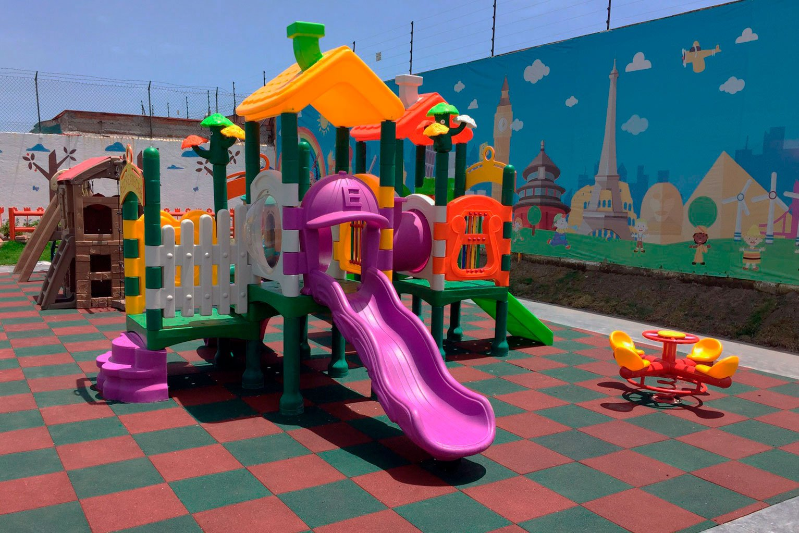
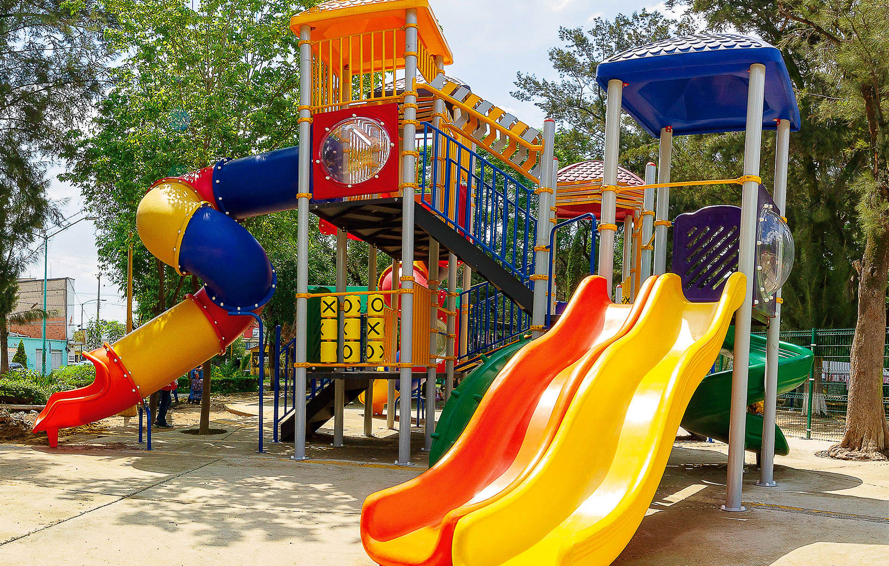
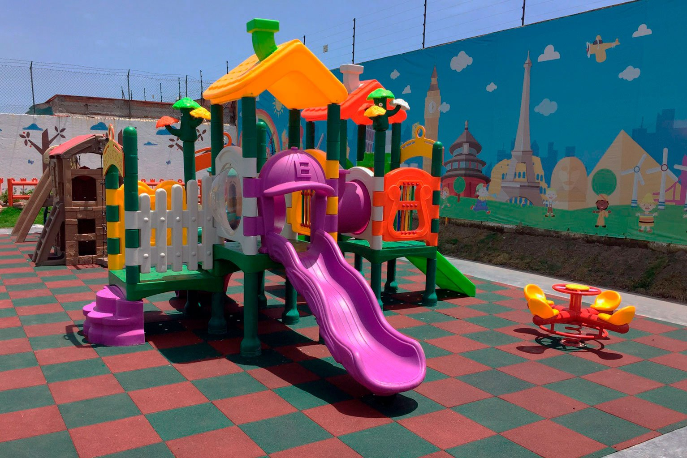
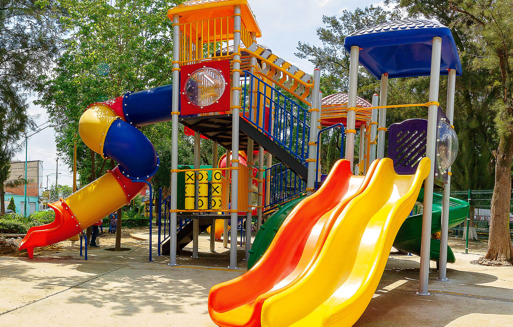
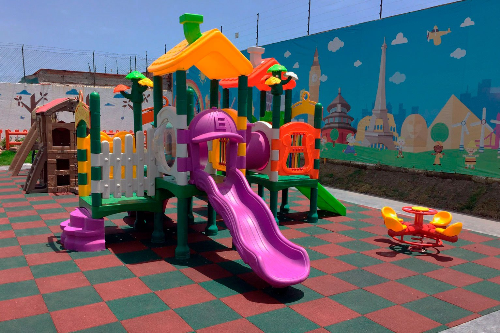
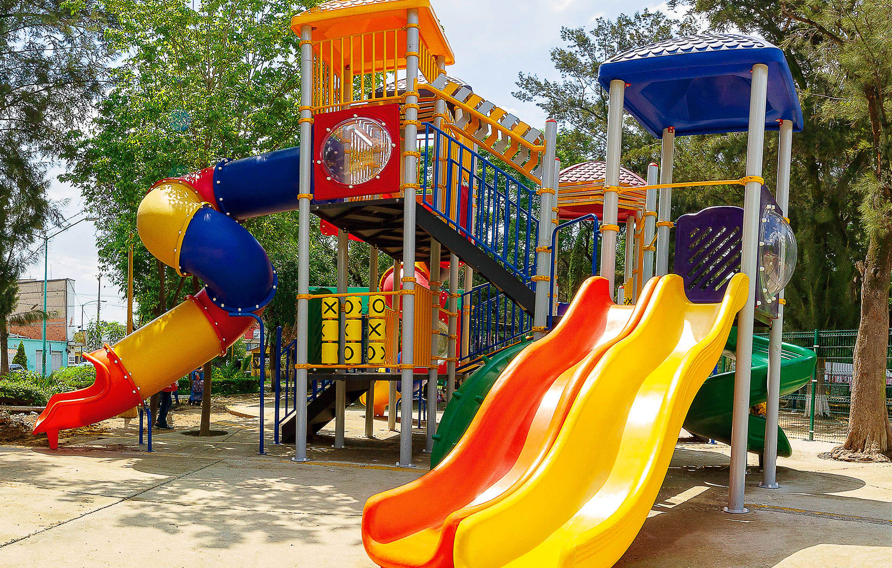
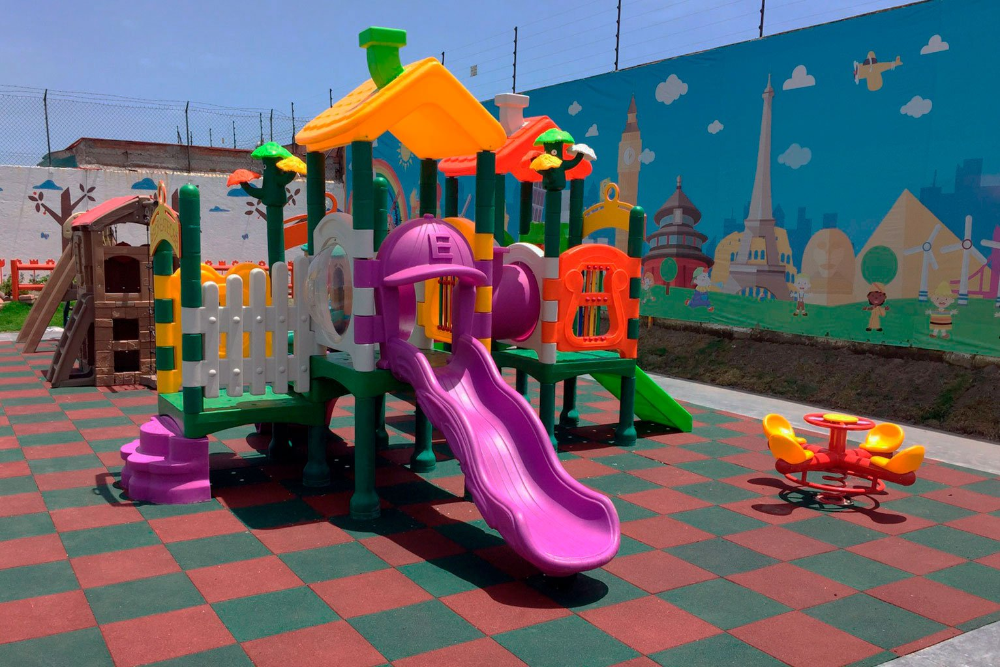
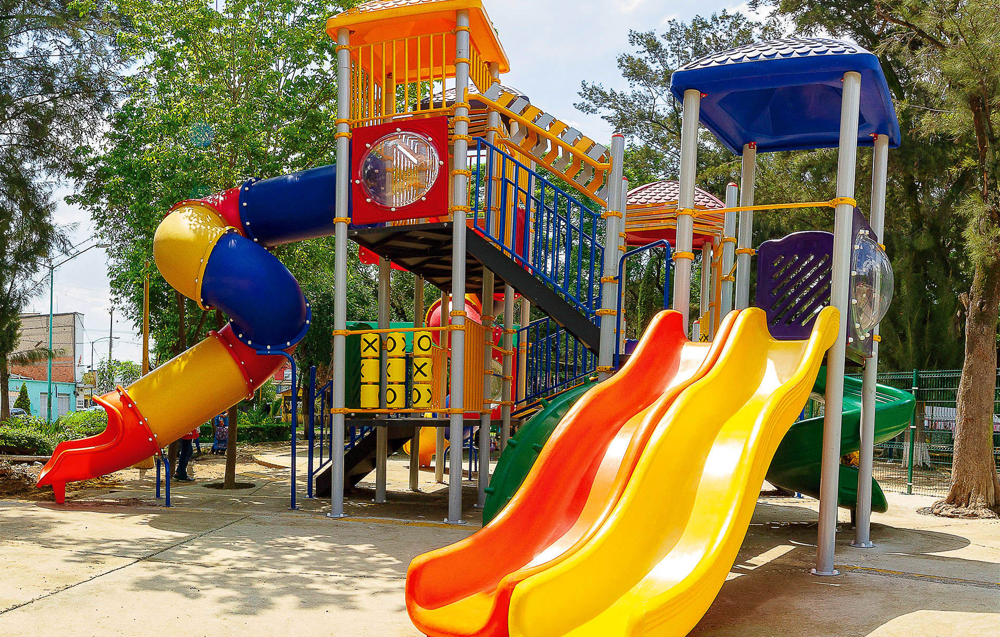
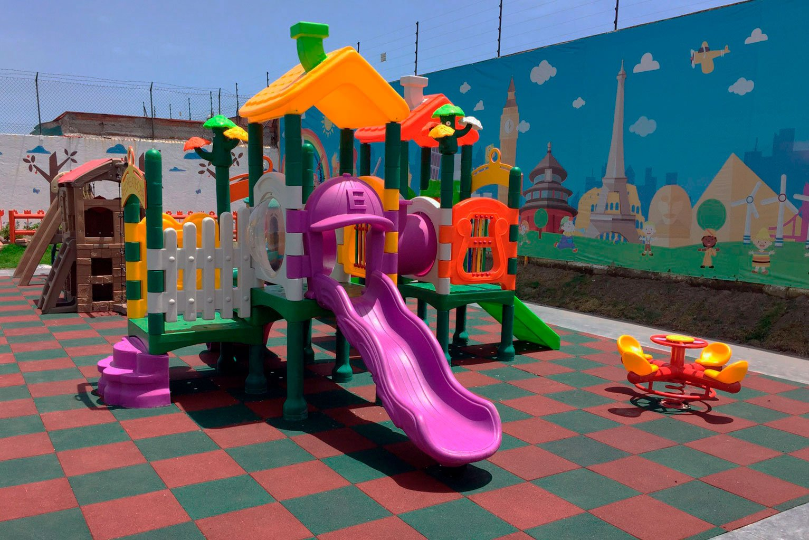
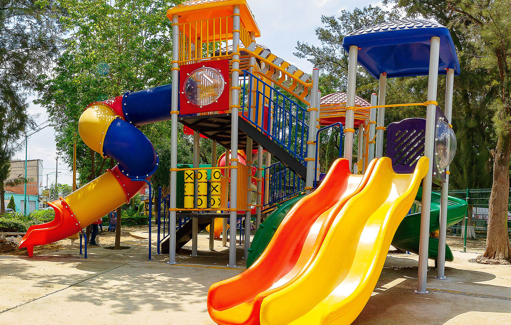

Práctica Fotográfica y Responsiva
Tres estilos: Horizontal, vertical y tipo abanico.
Juegos & Galería
☰
Inicio
Galería clásica
Galería vertical
Galería abanico
Galería clásica (grid fluido)
 
Galería vertical (scroll suave)
Abanico 1
Abanico 2
×
‹
›
 






